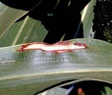
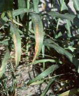

SORGHUM :: MAJOR DISEASE :: LEAF BLIGHT
Leaf blight - Exerohilum turcicum (Syn: Helminthosporium turcicum)
Symptoms
The pathogen also causes seed rot and seedling blight of sorghum. The disease appears as small narrow elongated spots in the initial stage and in due course they extend along the length of the leaf. On older plants, the typical symptoms are long elliptical necrotic lesions, straw coloured in the centre with dark margins.
{kind=link}
|  |  |
Symptoms |
|
The straw coloured centre becomes darker during sporulation. The lesions can be several centimeters long and wide. Many lesions may develop and coalesce on the leaves, destroying large areas of leaf tissue, giving the crop a burnt appearance.
Pathogen
The mycelium is localised in the infected lesion. Conidiophores emerge through stomata and are simple, olivaceous, septate and geniculate. Conidia are olivaceous brown, 3-8 septate and thick walled.
Favourable Conditions
- Cool moist weather.
- High humidity (90 per cent)
- High rainfall.
Disease cycle
The pathogen is found to persist in the infected plant debris. Seed borne conidia are responsible for seedling infection. Secondary spread is through wind-borne conidia.
Management
- Use disease free seeds.
- Treat the seeds with Captan or Thiram at 4 g/kg.
- Spray Mancozeb 1.25 kg or Captafol 1 kg/ha.